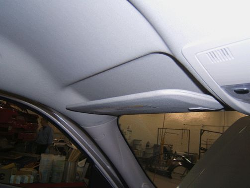
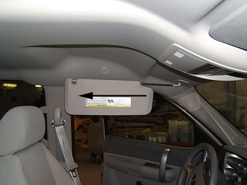
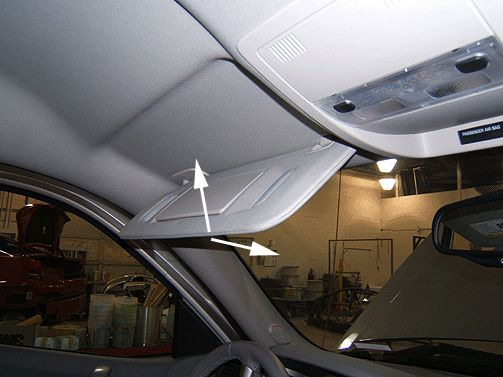

Interior - Sun Visor Fails to Stay In Up Position
TECHNICALBulletin No.: 09-08-110-013A
Date: April 18, 2011
Subject: Sunshade (Sun Visor) Fails to Stay In Position (Re-seat Detent Spring)
Models:
2007-2012 Cadillac Escalade, Escalade ESV, Escalade EXT
2007-2012 Chevrolet Avalanche, Silverado, Suburban, Tahoe
2007-2012 GMC Sierra, Yukon, Yukon XL
Supercede:
This bulletin is being revised to include the 2012 model year. Please discard Corporate Bulletin Number 09-08-110-013 (Section 08 - Body and Accessories).
Condition

Some customers may comment that the front sunshade (sun visor) doesn't stay in position tightly against the headliner when in the up position and clipped into the center mount.
Cause

The condition may be caused by the sunshade being over extended (forced) along the slide on rod to the end of its travel. This over extension can cause the detent spring to be pulled off of the flat on the slide on rod and can cause the detent function to be inoperative.
Correction
In many cases, the detent spring can be re-seated into the correct position. Use the following procedure to correct the condition.
1. Position the sunshade in the forward position and engage the sunshade into the center clip.

2. Cycle the sunshade up and down 15-20 cycles. This should engage the detent spring.
3. Repeat the procedure on the second visor.
If the above steps fail to resolve the condition, refer to diagnostic procedures in SI to correct the condition.
Warranty Information
For vehicles repaired under warranty, use the table.

Disclaimer